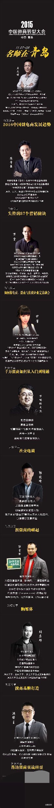

深夜福利。@龚文祥:赠送微电商培训指标；我及万能的大熊、万堂、郭俊峰及伊酱等9个大咖一起培训“2016年如何做微商”，主办方给我50个指标回馈我的粉丝，有意在11月7日、8日去青岛参加微商培训的，回复“报名”及私信你的姓名，手机及一句话简介，即可参加免费2天培训指标，共50名，今晚满即截止。 
回复@南乔73:眼不见心不烦。//@南乔73:有时候是看到某些人就上火，特别是听到这些人高谈阔论的时候更火大，何解？@Ada李力:今天有些心浮气躁，烦得很。晚上想了想，还是心里一直有隐忧，犹如定时炸弹，遇到火苗就会把情绪钩出来。-- 发泄情绪很蠢，不过会提醒自己在意的是什么。问题还是要逐个解决，需要时间，有时急也没用。